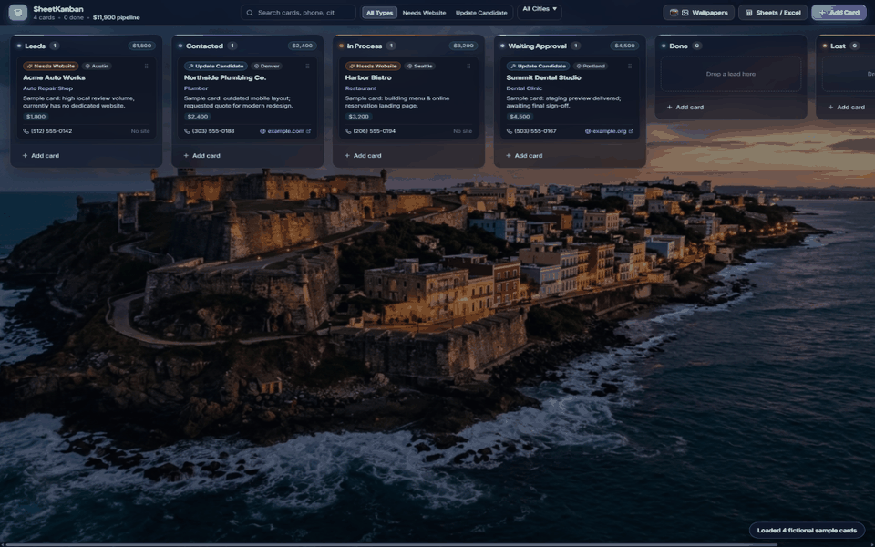

1
Click Download
Click the blue download button above. Your computer will download one installer file.
Your all-in-one desktop workspace for Kanban boards (Excel & Google Sheets), Calendar, Markdown Notes, and a 99-formula Calculator — including 25 Solar & Renewable Energy formulas. No account required.

Click the blue download button above. Your computer will download one installer file.
Windows: Double-click the .exe file — it installs and opens automatically.
Mac: Open the .dmg and drag OND into Applications.
Launch OND from your Desktop, Start Menu, or Mac Applications folder. Future updates happen inside the app with one click.
Because OND is a free independent open-source app, Windows may ask you to confirm the first time. Click More info → Run anyway. You only need to do this once.
Open your Applications folder, right-click (or Control-click) OND, and choose Open → Open. After that, it opens normally every time.